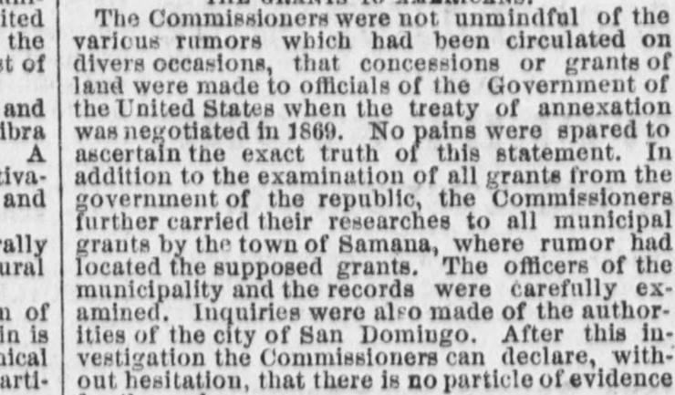
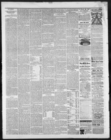

Turthor carried (heir researches to all municipal f;ranta by the townLlevaron además sus investigaciones a todas las concesiones municipales de la población
Perrysburg Journal. Perrysburg, Wood Co., O. [Ohio], April 14, 1871. Page 4. View the originalVer el original


See the full pageVer la página completaThe newspaper reported that Commissioners found no evidence to support charges regarding municipal grants at Samana after examining records and authorities. Additionally, the Commissioners stated that Dominicans are willing to be annexed based on the treaty terms, with added requests including rent payment for Samana and a $300,000 appropriation for an agricultural and scientific college. Finally, the Commissioners expressed their belief, based on observations and facts, that annexation after a period of probation is the only way for the Dominican Republic to secure its independence.El rotativo consignó que los comisionados no hallaron indicio alguno que corroborase las acusaciones de concesiones municipales en Samaná tras inspeccionar los registros y entrevistar a las autoridades. Asimismo, los delegados señalaron que los dominicanos se allanaban gustosos a la anexión con arreglo a las condiciones pactadas, recabando demandas adicionales como la liquidación del arriendo de Samaná y una consignación de 300.000 dólares para erigir un colegio agrícola y científico. Por último, los comisionados expresaron su convencimiento, apoyado en hechos y testimonios oculares, de que la anexión tras un período probatorio era la única fórmula para que la República Dominicana consolidase su independencia.
FULL TEXT:TEXTO COMPLETO:
THE GRANTS TO AMERICANS.LAS CONCESIONES A ESTADOUNIDENSES.
The Commissioners were not unmindful of various rumors which had been circulated on divers occasions, that concessions or grants of land were made to officials of the Government of the United States when the treaty of annexation was negotiated in 1869. No pains were spared to ascertain the exact truth of this statement. In addition to the examination of all grants from the government of the republic, the Commission further carried their researches to all municipal grants by the town of Samana, where rumor had located the supposed grants. The officers of the municipality and the records were carefully examined. Inquiries were also made of the authorities of the city of San Domingo. After this investigation the Commissioners can declare, without hesitation, that there is no particle of evidence for these charges.Los Comisionados no desconocían los diversos rumores que habían circulado en diversas ocasiones, de que se hicieron concesiones o mercedes de tierra a funcionarios del Gobierno de los Estados Unidos cuando el tratado de anexión fue negociado en 1869. No se escatimó esfuerzo alguno para averiguar la verdad exacta de esta declaración. Además del examen de todas las concesiones del gobierno de la república, la Comisión extendió además sus investigaciones a todas las concesiones municipales del pueblo de Samaná, donde el rumor había situado las supuestas concesiones. Los funcionarios de la municipalidad y los registros fueron cuidadosamente examinados. También se hicieron averiguaciones a las autoridades de la ciudad de Santo Domingo. Después de esta investigación, los Comisionados pueden declarar, sin vacilación, que no hay partícula alguna de evidencia para estos cargos.